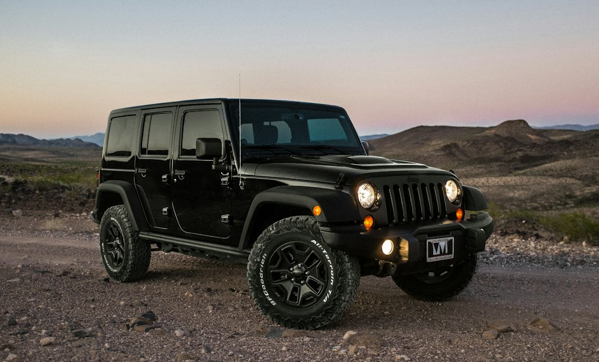

Ala Alta • 4 Plazas
Cessna 172 Skyhawk
El avión monomotor más conocido y seguro del mundo. Muy estable y perfecto para aprender a navegar y aterrizar.
Revisión anual:
Bienvenido a AeroLink, un club de aviación y escuela de pilotos con base en el aeródromo de Madrid Cuatro Vientos. Ofrecemos cursos de iniciación, alquiler de avionetas para pilotos titulados y vuelos de divulgación con instructor.
Nuestra flota está compuesta por aeronaves modernas y revisadas periódicamente para garantizar la máxima seguridad en el aire.

En AeroLink consideramos que la seguridad aérea es lo primero. Todas las operaciones se rigen por la normativa de la Agencia Estatal de Seguridad Aérea (AESA) y la normativa europea EASA.
"El cielo no es un límite, sino un espacio de aprendizaje donde la disciplina y el entrenamiento marcan la diferencia."
— Francisco Varela, Instructor de Vuelo
Nuestros mecánicos titulados realizan inspecciones cada 50 y 100 horas de vuelo. Además, los instructores acompañan a cada alumno desde su primera clase teórica hasta la obtención de la licencia oficial PPL(A).

A continuación puedes ver los tres modelos más solicitados por nuestros socios y alumnos:
El avión monomotor más conocido y seguro del mundo. Muy estable y perfecto para aprender a navegar y aterrizar.
Revisión anual:

Avión de ala baja muy ágil y cómodo para viajes de media distancia y prácticas de viento cruzado.
Revisión anual:

Fabricada en fibra de carbono con motor diésel Jet-A1. Gran eficiencia y cabina con visibilidad panorámica.
Revisión anual:
Conoce cómo es un vuelo real con estas muestras multimedia:
Grabación desde el interior de cabina en fase de aproximación a la pista:
Sonido ambiente y comunicaciones por radiofrecuencia aérea:
Antes de despegar es obligatorio consultar el estado del viento y la visibilidad. Este es el reporte actual de nuestro aeródromo:
LECU 221100Z 23007KT 9999 FEW030 22/09 Q1019 NOSIGSignificado: Viento de dirección 230 grados a 7 nudos, visibilidad de más de 10 km y temperatura de 22°C. Condiciones visuales favorables para el vuelo.